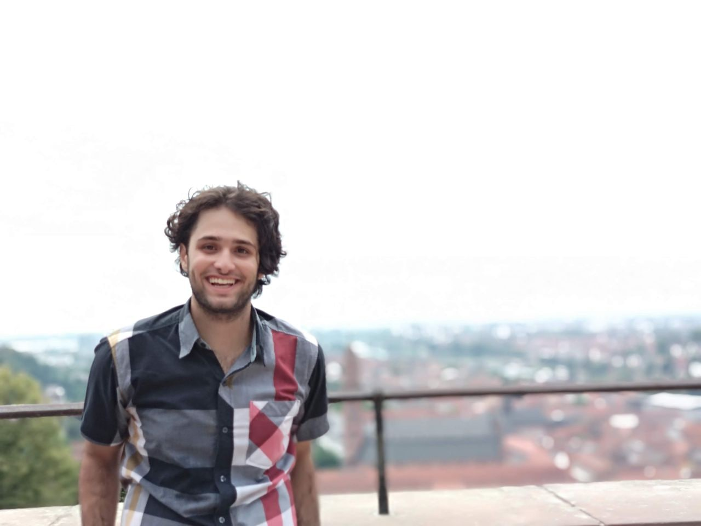

About
I am a Ph.D. student in Computer Science at the University of Waterloo, advised by Shai Ben-David and Sandra Zilles. I am also currently a part-time machine learning researcher at RBC Borealis.
I study the theory of machine learning, with a focus on questions inspired by real-world applications. In particular, I am interested in how having more or less supervision affects what can be learned.
Before joining Waterloo, I completed my master’s degree at the University of Toronto under the supervision of Murat Erdogdu and Amir-massoud Farahmand, working on theoretical reinforcement learning. I also interned at the Max Planck Institute for Software Systems, where I worked on machine teaching with Adish Singla.

Publications
Main research themes
Learning from positive (and unlabeled) data
What can we learn when negative examples are unavailable? I study learning from positive examples alone, or from positive examples together with unlabeled data.
Machine teaching
In machine teaching, the training data—or additional examples supplied to the learner—are curated by a knowledgeable teacher. I study how this guidance affects learning.
All publications
Refereed publicationsPreprints and manuscripts
Refereed publications
-
Surprises in Proper Positive-Only Learning
The 40th Annual Conference on Neural Information Processing Systems (NeurIPS), 2026. Oral Presentation, Top 0.4% of Submissions.
-
Settling the Sample Complexity of Deterministic Agnostic PAC Learning
The 40th Annual Conference on Neural Information Processing Systems (NeurIPS), 2026.
-
Learning with Multiple Correct Answers – Regret Bounds under Different Feedback Models
The 40th Annual Conference on Neural Information Processing Systems (NeurIPS), 2026.
-
Active learning from positive and unlabeled examples
The 40th Annual Conference on Neural Information Processing Systems (NeurIPS), 2026.
-
The Computational Complexity of Almost Stable Clustering with Penalties
The 35th International Joint Conference on Artificial Intelligence (IJCAI), 2026.
-
Learning from positive and unlabeled examples—Finite size sample bounds
The 39th Annual Conference on Neural Information Processing Systems (NeurIPS), 2025.
-
Formal Models of Active Learning from Contrastive Examples
The 39th Annual Conference on Neural Information Processing Systems (NeurIPS), 2025.
-
On Batch Teaching with Sample Complexity Bounded by VCD
The 36th Conference on Neural Information Processing Systems (NeurIPS), 2022. Spotlight Paper.
-
Deep Reinforcement Learning for Online Control of Stochastic Partial Differential Equations
NeurIPS Workshop on the Symbiosis of Deep Learning and Differential Equations (DLDE), 2021. Spotlight paper.
-
ChOracle: A Unified Statistical Framework for Churn Prediction
IEEE Transactions on Knowledge and Data Engineering (IEEE TKDE), 2020.
-
Understanding the Power and Limitations of Teaching with Imperfect Knowledge
The 29th International Joint Conference on Artificial Intelligence (IJCAI), 2020.
-
Preference-Based Batch and Sequential Teaching: Towards a Unified View of Models
The 33rd Conference on Neural Information Processing Systems (NeurIPS), 2019.
Preprints and manuscripts
-
Deterministic Proper Positive-Only Learning is Independent of ZFC
Submitted to the 38th International Conference on Algorithmic Learning Theory (ALT), 2027.
-
Query Feedback and Teaching for Stable and Certifiable Language Generation
Submitted to the 38th International Conference on Algorithmic Learning Theory (ALT), 2027.
-
On the Convergence and Approximation of Policy Gradient Methods for Spectral Measures
M.Sc. Thesis (PDF available upon request), 2022.
-
Learning Half-Spaces from Perturbed Contrastive Examples
arXiv:2602.02080, 2026.
-
Preference-Based Batch and Sequential Teaching
arXiv:2010.10012, 2020.
* Equal contributions. † Authors are listed in alphabetical order.
Awards
- David R. Cheriton Graduate Scholarship, 2026–2028. 20,000 CAD
- Canada Graduate Scholarship-Doctoral, 2024–2027. 120,000 CAD
- David R. Cheriton Graduate Scholarship, 2023–2025. 20,000 CAD
- Ontario Graduate Scholarship, 2020–2021. 15,000 CAD
- Vector Institute Scholarship in Artificial Intelligence, 2020–2021. 17,500 CAD
- Iran National Mathematics Olympiad, 2014. Silver medal; among the top 40 students in Iran, out of more than 30,000 initial participants.